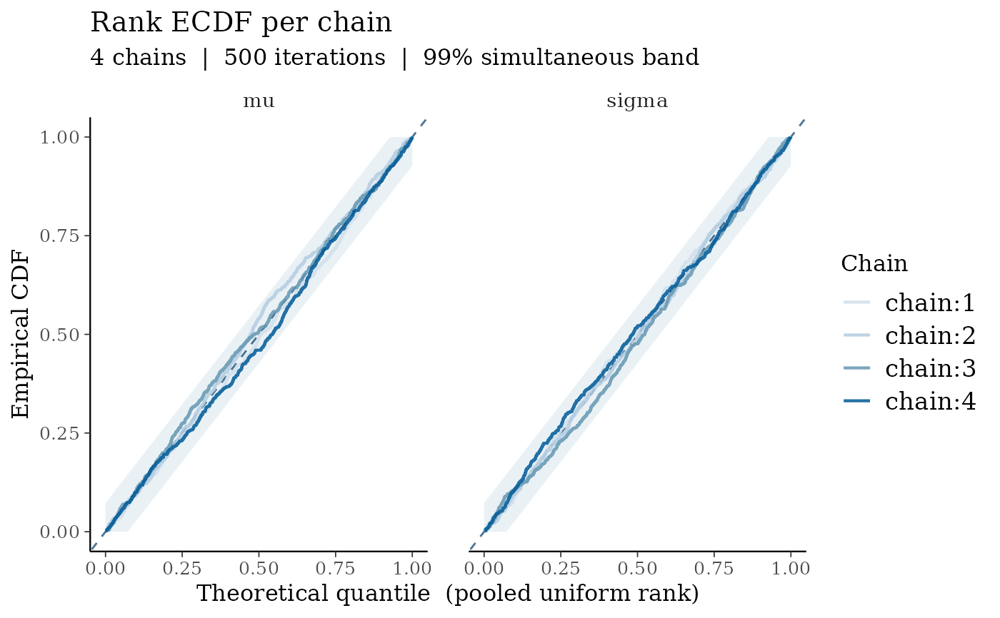
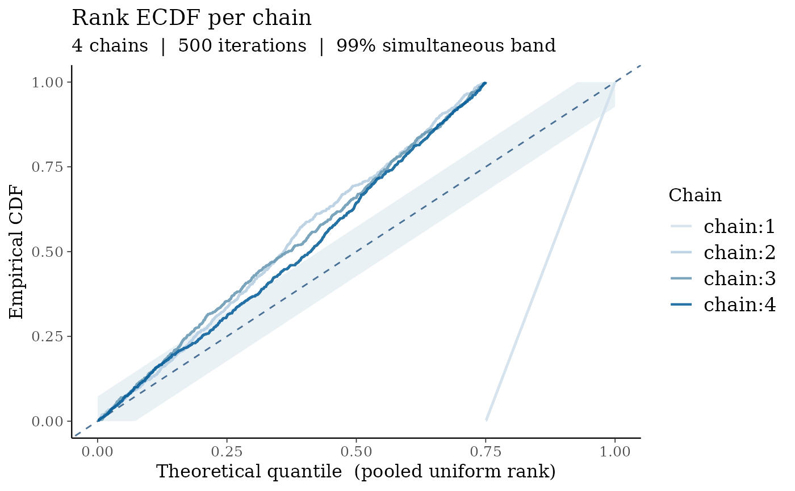
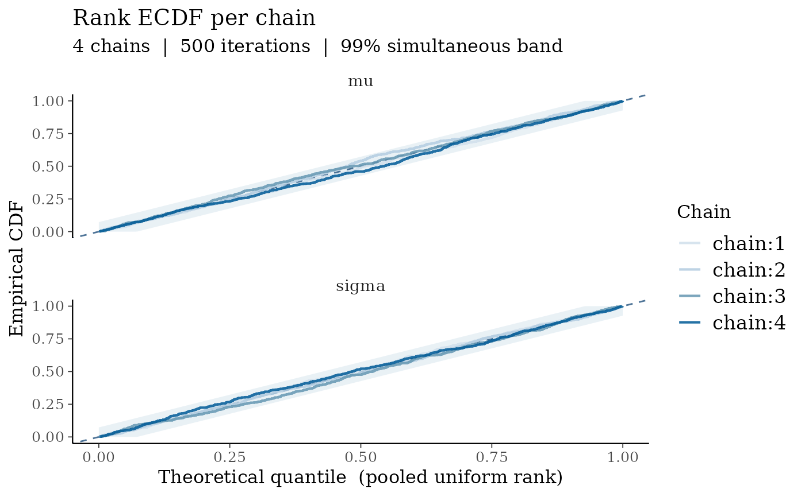

Plots the empirical cumulative distribution function (ECDF) of within-chain rank statistics alongside a simultaneous confidence band consistent with ideal mixing. Under good mixing the ECDFs for all chains should be indistinguishable and lie within the band around the diagonal. Chains that explore different regions of the posterior will show ECDFs that diverge from the diagonal and from each other.
This is the ECDF-based companion to bayesplot::mcmc_rank_overlay() and
implements the diagnostic described by Vehtari et al. (2021).
Usage
mcmc_rank_ecdf(x, pars = NULL, prob = 0.99, facet_args = list())Arguments
- x
A 3D numeric array of MCMC draws with dimensions [iterations × chains × parameters]. The
dimnamesattribute is used for chain and parameter labels; missing names are auto-generated.- pars
Optional character vector of parameter names to plot. Names must match the third dimension of
x. IfNULL(default), all parameters are shown.- prob
Numeric in (0, 1). Coverage probability for the simultaneous confidence band (DKW inequality). Default
0.99.- facet_args
A named list of additional arguments forwarded to
ggplot2::facet_wrap(), such asncolorscales. Ignored when only one parameter is plotted.
Value
A ggplot2::ggplot object. When multiple parameters are shown, the plot is faceted by parameter.
Details
For each parameter, draws from all chains are pooled and ranked (average ties). The ECDF of the resulting within-chain ranks is plotted for each chain on the probability scale \([0, 1]\) (ranks divided by the total number of draws \(S = I \times C\)).
Under ideal mixing the ranks are exchangeable across chains, so each chain's ECDF should track the diagonal. The simultaneous band uses the Dvoretzky-Kiefer-Wolfowitz (DKW) inequality: $$\Pr\!\left(\sup_x |F_I(x) - F(x)| \leq \varepsilon\right) \geq 1 - 2e^{-2 I \varepsilon^2}$$ where \(I\) is the number of iterations per chain, giving: $$\varepsilon = \sqrt{\frac{\log(2/\alpha)}{2I}}$$
References
Vehtari, A., Gelman, A., Simpson, D., Carpenter, B., and Bürkner, P.-C. (2021). Rank-normalization, folding, and localization: An improved R-hat for assessing convergence of MCMC (with discussion). Bayesian Analysis, 16(2), 667–718. doi:10.1214/20-BA1221
See also
bayesplot::mcmc_rank_overlay() for rank histograms;
bayesplot::mcmc_trace() for trace plots.
Examples
set.seed(7)
# Well-mixing chains: ECDFs should stay within the confidence band
good <- array(
rnorm(500 * 4 * 2),
dim = c(500, 4, 2),
dimnames = list(NULL, paste0("chain:", 1:4), c("mu", "sigma"))
)
mcmc_rank_ecdf(good)

# Pathological mixing: first chain stuck in a different region
bad <- good
bad[, 1, 1] <- rnorm(500, mean = 10, sd = 0.2)
mcmc_rank_ecdf(bad, pars = "mu")

# Adjust number of facet columns
mcmc_rank_ecdf(good, facet_args = list(ncol = 1))
